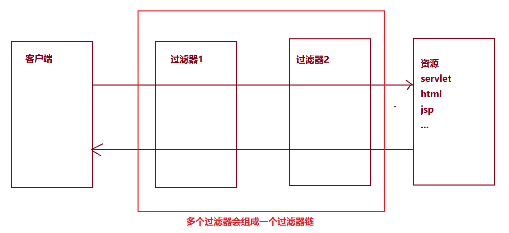

06-过滤器与监听器一. 今日目标二. 今日内容(一) Filter(过滤器)1. 过滤器概念2. 快速入门3. 过滤器细节web.xml配置执行流程生命周期配置详解过滤器链(二) 案例练习1. 案例 : 登录验证需求分析实现2. 案例 : 敏感词汇过滤需求分析增强对象的功能实现(三) Listener(监听器)1. 监听器方法2. 实现步骤3. 代码示例
xxxxxxxxxx1. 生活中的过滤器：净水器,空气净化器，土匪、2. web中的过滤器：当访问服务器的资源时，过滤器可以将请求拦截下来，完成一些特殊的功能。3. 过滤器的作用：一般用于完成通用的操作。如：登录验证、统一编码处理、敏感字符过滤...
步骤
xxxxxxxxxx1. 定义一个类，实现接口Filter2. 复写方法3. 配置拦截路径(web.xml/注解)
代码
xxxxxxxxxx("/*")//访问所有资源之前，都会执行该过滤器public class FilterDemo1 implements Filter { public void init(FilterConfig filterConfig) throws ServletException {} public void doFilter(ServletRequest servletRequest, ServletResponse servletResponse, FilterChain filterChain) throws IOException, ServletException { System.out.println("filterDemo1被执行了...."); //放行 filterChain.doFilter(servletRequest,servletResponse); } public void destroy() {}}xxxxxxxxxx<filter> <filter-name>demo1</filter-name> <filter-class>cn.itcast.web.filter.FilterDemo1</filter-class> </filter> <filter-mapping> <filter-name>demo1</filter-name> <!-- 拦截路径 --> <url-pattern>/*</url-pattern> </filter-mapping>xxxxxxxxxx1. 执行过滤器2. 执行放行后的资源3. 回来执行过滤器放行代码下边的代码
xxxxxxxxxx1. init:在服务器启动后，会创建Filter对象，然后调用init方法。只执行一次。用于加载资源2. doFilter:每一次请求被拦截资源时，会执行。执行多次3. destroy:在服务器关闭后，Filter对象被销毁。如果服务器是正常关闭，则会执行destroy方法。只执行一次。用于释放资源
拦截路径配置：
xxxxxxxxxx1. 具体资源路径： `/index.jsp` 只有访问index.jsp资源时，过滤器才会被执行2. 拦截目录： `/user/*` 访问/user下的所有资源时，过滤器都会被执行3. 后缀名拦截： `*.jsp` 访问所有后缀名为jsp资源时，过滤器都会被执行4. 拦截所有资源： `/*` 访问所有资源时，过滤器都会被执行
拦截方式配置：资源被访问的方式
注解配置：
xxxxxxxxxx设置dispatcherTypes属性1. REQUEST：默认值。浏览器直接请求资源2. FORWARD：转发访问资源3. INCLUDE：包含访问资源4. ERROR：错误跳转资源5. ASYNC：异步访问资源
web.xml配置
xxxxxxxxxx设置<dispatcher></dispatcher>标签即可
xxxxxxxxxx多个过滤器拦截同一个用户请求 , 这多个过滤器就会组成一个过滤器链

执行顺序：如果有两个过滤器：过滤器1和过滤器2
xxxxxxxxxx1. 过滤器12. 过滤器23. 资源执行4. 过滤器25. 过滤器1
过滤器先后顺序问题：
xxxxxxxxxx1. 注解配置：按照类名的字符串比较规则比较，值小的先执行- 如： AFilter 和 BFilter，AFilter就先执行了。2. web.xml配置： <filter-mapping>谁定义在上边，谁先执行
xxxxxxxxxx1. 访问day17_case案例的资源。验证其是否登录2. 如果登录了，则直接放行。3. 如果没有登录，则跳转到登录页面，提示"您尚未登录，请先登录"。
xxxxxxxxxx/** * 登录验证的过滤器 */("/*")public class LoginFilter implements Filter { public void doFilter(ServletRequest req, ServletResponse resp, FilterChain chain) throws ServletException, IOException { System.out.println(req); //0.强制转换 HttpServletRequest request = (HttpServletRequest) req; //1.获取资源请求路径 String uri = request.getRequestURI(); //2.判断是否包含登录相关资源路径,要注意排除掉 css/js/图片/验证码等资源 if(uri.contains("/login.jsp") || uri.contains("/loginServlet") || uri.contains("/css/") || uri.contains("/js/") || uri.contains("/fonts/") || uri.contains("/checkCodeServlet") ){ //包含，用户就是想登录。放行 chain.doFilter(req, resp); }else{ //不包含，需要验证用户是否登录 //3.从获取session中获取user Object user = request.getSession().getAttribute("user"); if(user != null){ //登录了。放行 chain.doFilter(req, resp); }else{ //没有登录。跳转登录页面 request.setAttribute("login_msg","您尚未登录，请登录"); request.getRequestDispatcher("/login.jsp").forward(request,resp); } } } public void init(FilterConfig config) throws ServletException { } public void destroy() { }}xxxxxxxxxx1. 对day17_case案例录入的数据进行敏感词汇过滤2. 敏感词汇参考《敏感词汇.txt》3. 如果是敏感词汇，替换为 ***
需要完成的点:
- 对request对象进行增强。增强获取参数相关方法
- 放行。传递代理对象
xxxxxxxxxx1. 设计模式：一些通用的解决固定问题的方式2. 装饰模式3. 代理模式* 概念：1. 真实对象：被代理的对象2. 代理对象：3. 代理模式：代理对象代理真实对象，达到增强真实对象功能的目的* 实现方式：1. 静态代理：有一个类文件描述代理模式2. 动态代理：在内存中形成代理类* 实现步骤：1. 代理对象和真实对象实现相同的接口2. 代理对象 = Proxy.newProxyInstance();3. 使用代理对象调用方法。4. 增强方法* 增强方式：1. 增强参数列表2. 增强返回值类型3. 增强方法体执行逻辑* 需要理解的点1. 如何创建动态代理对象? Proxy.newProxyInstance(Classloader classloader,Class[] interfaces,InvocationHandler ivh)2. 调用代理对象的任意一个方法,都会触发InvocationHandler对象中invoke方法的执行 invoke(Object proxy, Method method, Object[] args)3. 代理对象并没有具体功能,需要调用真实对象完成对应的功能实现 ,在InvocationHandler对象中的invoke方法内完成真实对象的功能调用4. 在InvocationHandler对象中的invoke方法内可以完成对真实对象的功能增强 参数 返回值 方法体5. InvocationHandler对象中invoke方法的返回值,最终会返回给代理对象的方法调用
xxxxxxxxxxpackage cn.itcast.web.filter;import javax.servlet.*;import javax.servlet.annotation.WebFilter;import java.io.BufferedReader;import java.io.FileReader;import java.io.IOException;import java.lang.reflect.InvocationHandler;import java.lang.reflect.Method;import java.lang.reflect.Proxy;import java.util.ArrayList;import java.util.List;/** * 敏感词汇过滤器 */("/*")public class SensitiveWordsFilter implements Filter { private List<String> list = new ArrayList<String>();//敏感词汇集合 public void init(FilterConfig config) throws ServletException { try{ //1.获取文件真实路径 ServletContext servletContext = config.getServletContext(); String realPath = servletContext.getRealPath("/WEB-INF/classes/敏感词汇.txt"); //2.读取文件 BufferedReader br = new BufferedReader(new FileReader(realPath)); //3.将文件的每一行数据添加到list中 String line = null; while((line = br.readLine())!=null){ list.add(line); } br.close(); System.out.println(list); }catch (Exception e){ e.printStackTrace(); } } public void doFilter(ServletRequest req, ServletResponse resp, FilterChain chain) throws ServletException, IOException { //1.创建代理对象，增强getParameter方法 ServletRequest proxy_req = (ServletRequest) Proxy.newProxyInstance(req.getClass().getClassLoader(), req.getClass().getInterfaces(), new InvocationHandler() { public Object invoke(Object proxy, Method method, Object[] args) throws Throwable { //增强getParameter方法 //判断是否是getParameter方法 if(method.getName().equals("getParameter")){ //增强返回值 //获取返回值 String value = (String) method.invoke(req,args); if(value != null){ for (String str : list) { if(value.contains(str)){ value = value.replaceAll(str,"***"); } } } return value; } //判断方法名是否是 getParameterMap //判断方法名是否是 getParameterValue return method.invoke(req,args); } }); //2.放行 chain.doFilter(proxy_req, resp); } public void destroy() {}}xxxxxxxxxx概念：web的三大组件之一。* web的三大组件 : Servlet Filter Listener事件监听机制* 事件 ：一件事情* 事件源 ：事件发生的地方* 监听器 ：一个对象* 注册监听：将事件、事件源、监听器绑定在一起。 当事件源上发生某个事件后，执行监听器代码
xxxxxxxxxxServletContextListener监听器:主要用来监听ServletContext域对象的创建和销毁的监听器。ServletContext创建和销毁:创建:在服务器启动的时候，为每个web应用创建单独的ServletContext对象。销毁:在服务器关闭的时候，或者项目从web服务器中移除的时候。
| 返回值 | 方法声明 | 描述 |
|---|---|---|
| void | contextDestroyed(ServletContextEvent sce) | 监听ServletContext对象的销毁 |
| void | contextInitialized(ServletContextEvent sce) | 监听ServletContext对象的创建 |
xxxxxxxxxx1. 定义一个类，实现ServletContextListener接口2. 复写方法3. 配置1. web.xml<listener><listener-class>cn.itcast.web.listener.ContextLoaderListener</listener-class></listener>2. 注解： @WebListener
package cn.itcast.web.listener;import javax.servlet.ServletContext;import javax.servlet.ServletContextEvent;import javax.servlet.ServletContextListener;import javax.servlet.annotation.WebListener;import java.io.FileInputStream;public class ContextLoaderListener implements ServletContextListener { /** * 监听ServletContext对象创建的。ServletContext对象服务器启动后自动创建。 * * 在服务器启动后自动调用 * @param servletContextEvent */ public void contextInitialized(ServletContextEvent servletContextEvent) { //加载资源文件 //1.获取ServletContext对象 ServletContext servletContext = servletContextEvent.getServletContext(); //2.加载资源文件 String contextConfigLocation = servletContext.getInitParameter("contextConfigLocation"); //3.获取真实路径 String realPath = servletContext.getRealPath(contextConfigLocation); //4.加载进内存 try{ FileInputStream fis = new FileInputStream(realPath); System.out.println(fis); }catch (Exception e){ e.printStackTrace(); } System.out.println("ServletContext对象被创建了。。。"); } /** * 在服务器关闭后，ServletContext对象被销毁。当服务器正常关闭后该方法被调用 * @param servletContextEvent */ public void contextDestroyed(ServletContextEvent servletContextEvent) { System.out.println("ServletContext对象被销毁了。。。"); }}